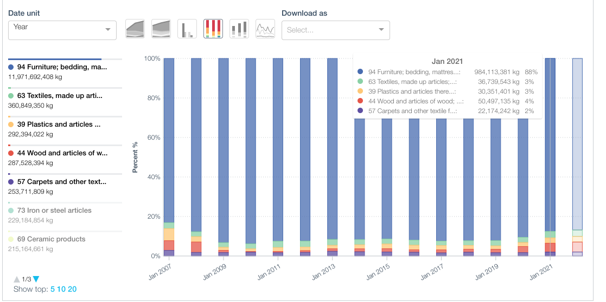
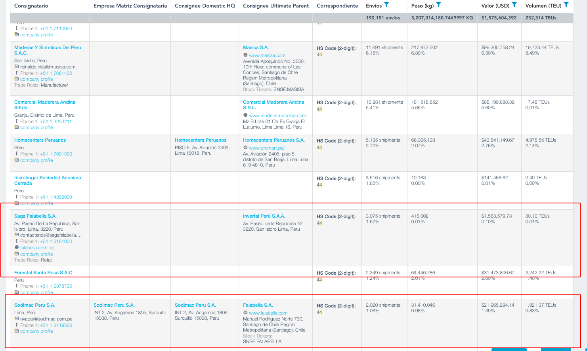
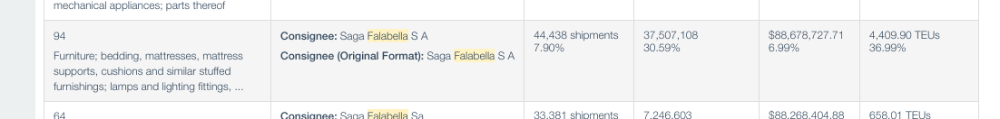
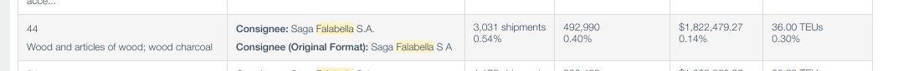
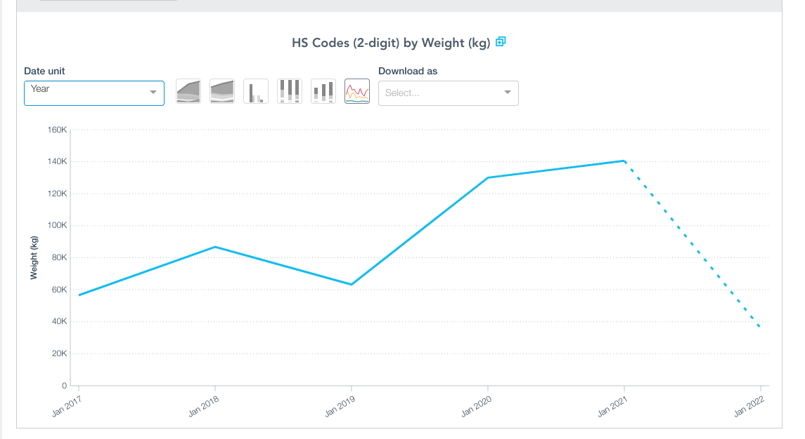
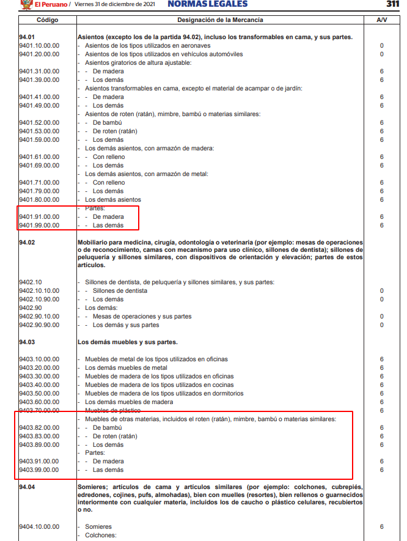
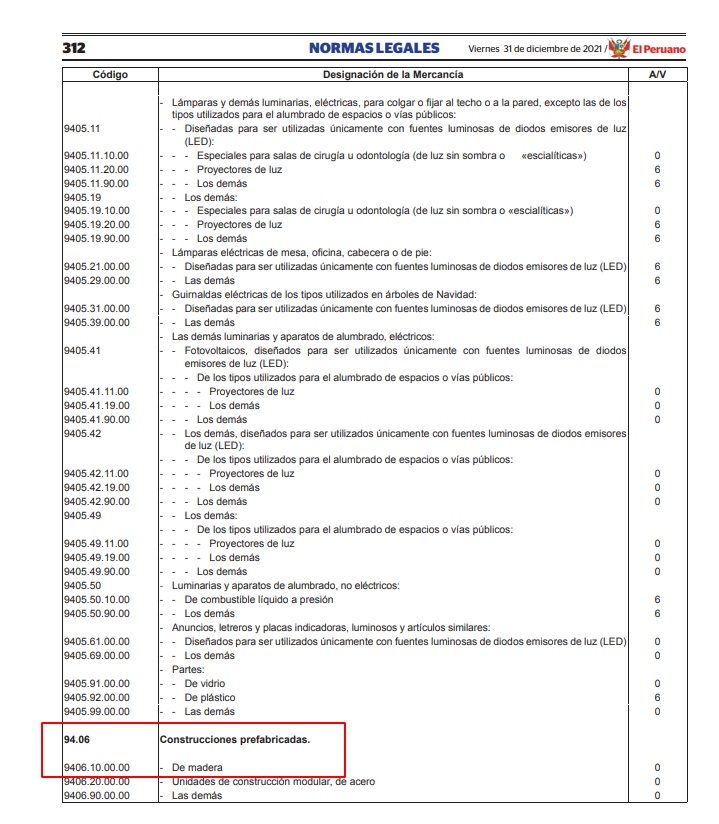
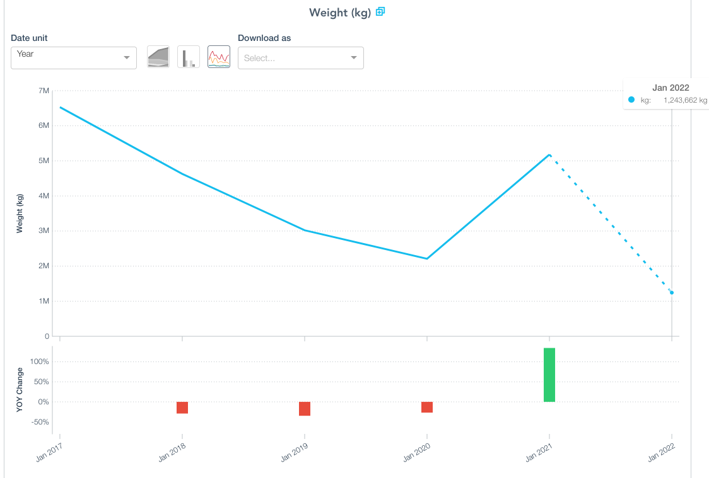
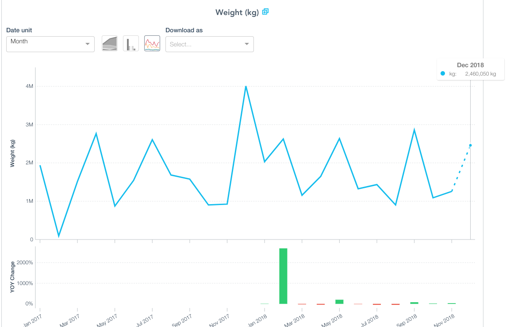
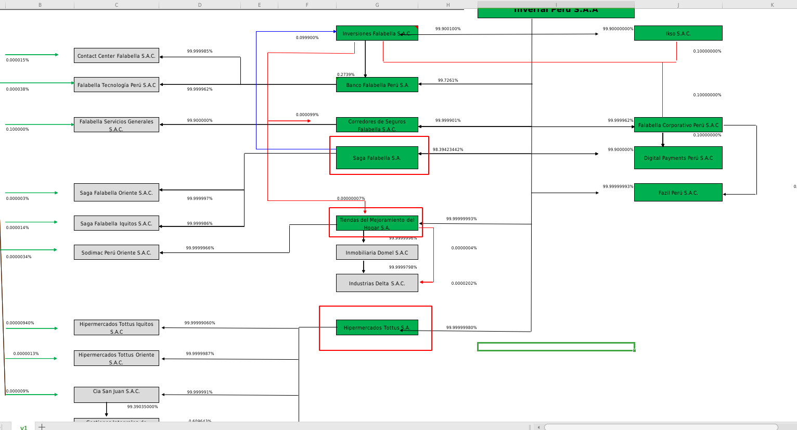

ikea_exploracion
Contexto
La multinacional Ikea llegará a latinoamérica con sucursales en Chile, Colombia y Perú. Parte de su estrategia es una sociedad comercial con Fallabella. Un angulo interesante en esta historia es identificar la madera comercializada, se tiene como hipótesis que Falabella no mantendrá los estándares ambientales de Ikea, a pesar de usar dicha marca.
El objetivo es identificar proveedores, el tipo de madera comercialiada, y las variaciones en los uotimes meses. Tambien si hay coincidencias con las mismas que utiliza IKEA para fabricar sus muebles en todo el mundo.
Ikea EEUU
Según datos de Panjiva, el capítulo arancelario que más utiliza IKEA de EEUU es el 94 (muebles).

El capítulo 44 (madera) está entre los cinco productos que importa IKEA a EEUU.
Perú
En el caso de Perú, el grupo Falabella tiene la siguiente estructura según el último reporte de la SMV:
Es de interés las siguientes sociedades:
Falabella S.A. / No se encontró RUC
Falabella Perú S.A.A. / RUC 20260172035
Saga Falabella S.A. / RUC 20100128056
Saga Falabella Oriente S.A.C. (Pucallpa) RUC 20393864967
Saga Falabella Iquitos S.A.C. / RUC 20541246275
Sodimac Perú / RUC 20389230724
La importancia de Fallabella en la importación de madera y muebles de madera
Los datos de Panjiva muestra que fallabella y sodimac (empresas del mismo grupo empresarial) se encuentran en el top 15 de importadoras de madera al Perú.

Falabella Perú SAA
No registra importaciones.
Saga Falabella SA / RUC 20100128056
Según Panjiva, los capitulos arancelarios de interes son el 94 (muebes) y 44 (madera).
El primero concentra el 6.89% de todas las importaciones realizadas por Saga Falabella SA entre enero de 2017 a agosto de 2020. En dicho periodo se importaron 37,507,108 KG en muebles por la suma de USD 88,678,727
El segundo concentra 0.14% en valor FOB en el periodo mencionado. Fallabella importó al Perú un total de 492,990 KG de madera valorizado en USD 1,822,479.


Para entrar en detalle de la evolución de dichas partidas revisaremos los registros de Veritrade.
Los datos preliminares muestran que hay un aumento en Peso neto y valor fob en las importaciones de madera (HS 44) en los últimos años.

Respecto al capítulo 94 hay que filtrar y seleccionar las subpartidas de interes. Por ejemplo, existen partidas que se refieren a muebles hechos a base de madera, mientras que otro se refiere a colchones o luminaria.


Una exploracion preliminar con los siguientes códigos revela que al cierre de 2021 se está recuperando el ritmo de importacion de años anteriores de la pandemia. El principal pais de origen de este tipo de muebles es Brazil.
940330: Muebles de madera de los tipos utilizados en oficinas
940340: Muebles de madera de los tipos utilizados en cocinas
940350: Muebles de madera de los tipos utilizados en dormitorios
940360: Los demás muebles de madera

Sodimac Perú SA / RUC 20389230724
Los datos de Panjiva revelan que Sodimac Perú importó madera hasta diciembre de 2018. A partir de esta fecha no registra más importaciones de este producto.
Se verificó de nuevo y se comprobó que Sodimac ya no importa ningún tipo de producto hasta diciembre de 2018. Qué subsidiaria lo está reemplazando?

Explorando industria de muebles a base de madera
Una búsqueda de importaciones de las siguientes partidas arancelarias entre 2017 y 2022 revela que Falabella usa varias subsidiarias para importar muebles de madera.
940330: Muebles de madera de los tipos utilizados en oficinas
940340: Muebles de madera de los tipos utilizados en cocinas
940350: Muebles de madera de los tipos utilizados en dormitorios
940360: Los demás muebles de madera
Por ejemplo aparecen razones sociales como Hipermercados Tottus SA , Tiendas de Mejoramiento del Hogar SA, Sodimac Peru SA (hasta fines de 2018). Estas compañías son parte del grupo Falabella según el organigrama subido por la SMV.
Una búsqueda similar de la partida 44 revela que también utilizó Sodimac Perúm sigue importanto con Saga Falabellla, y en el ranking tambien aparece Tiendas de Mejoramiento del Hogar.
Según datos de Sunat, Sodimac Perú está de baja. Ahora Tiendas de Mejoramiento del Hogar agrupa la Marca Sodimac y Maestro. Datos que coinciden con el registro de importaciones.

Conclusiones principales caso Perú:
Grupo Falabella en Perú usa varias razones sociales(hasta ahora se identificó 4) para importar madera 44, y muebles de madera (94).
La importación de muebles de madera predomina por sobre la importación de madera sin procesar. Los muebles de madera tienen como principal origen Brasil.
Las importaciones de madera que Falabella trae al Perú ha aumentado en los últimos años.
En Ikea EEUU también predomina la importación de muebles procesados. (Más del 85% todos los años), mientras que la madera sin procesar ocupa entre 3% y 4%.
Queda pendiente identificar los tipos de madera (o especies) juntando todas las razones sociales identificadas en el caso Perú. y compararlo con Ikea EEUU.